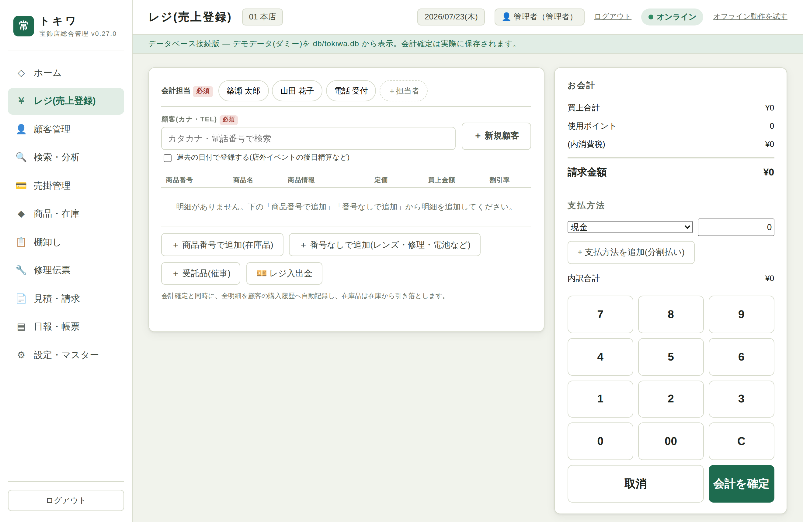
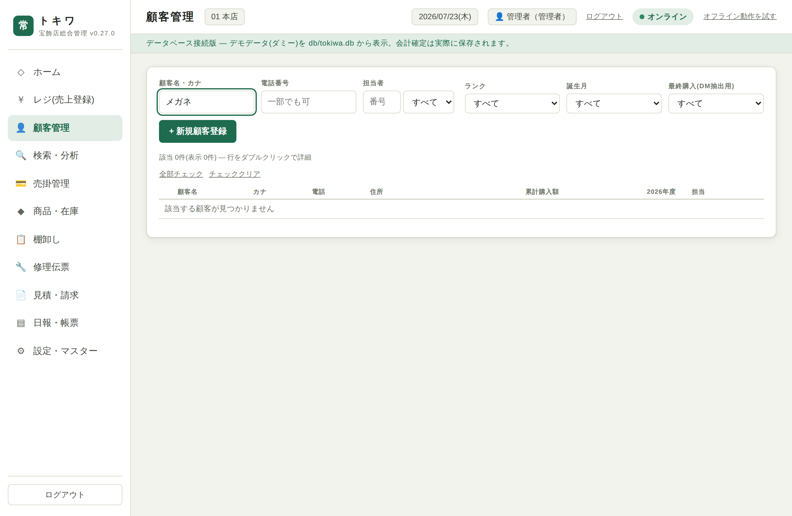
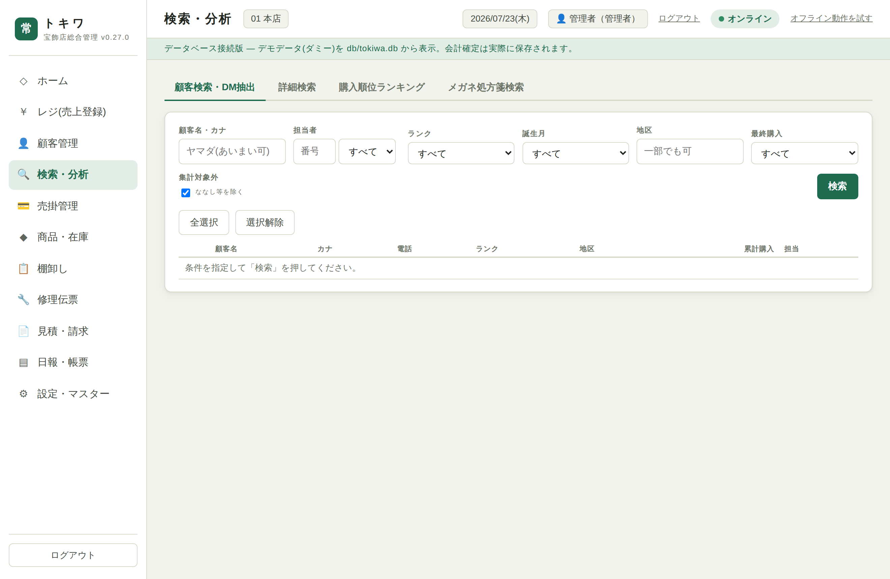
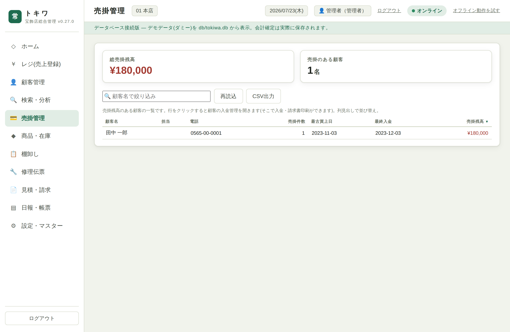
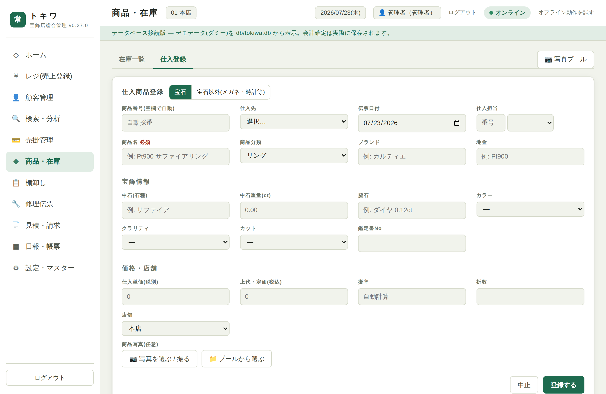
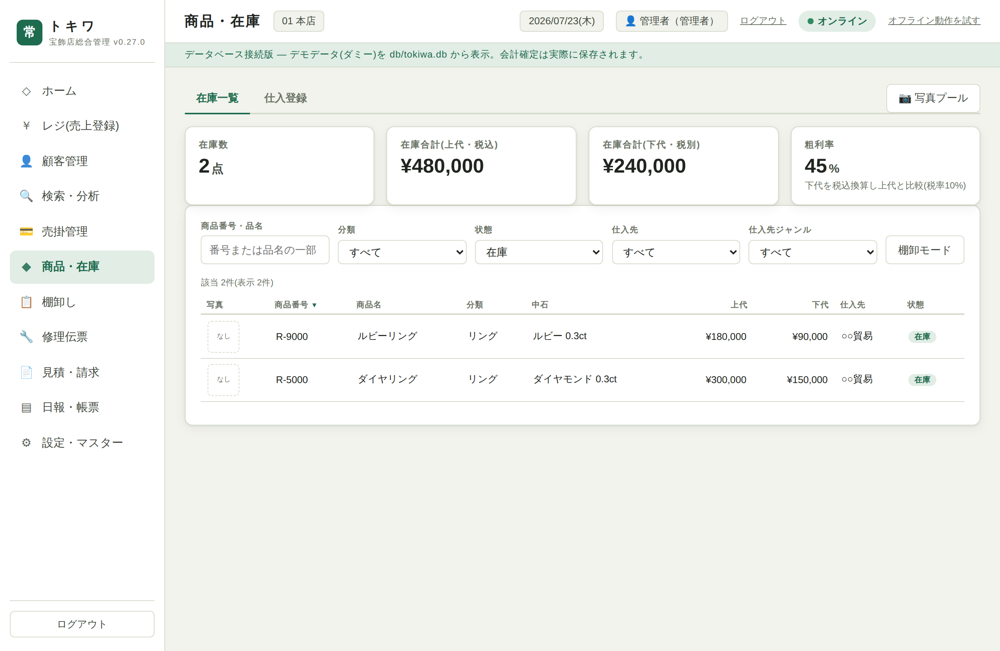
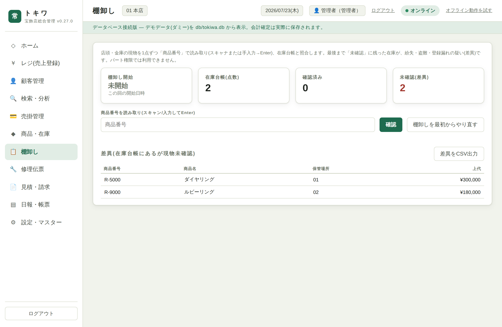
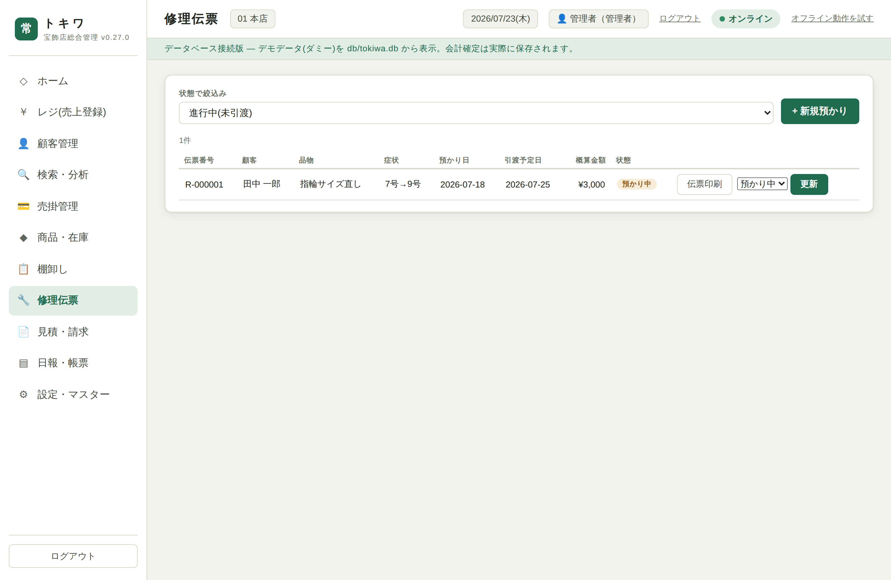
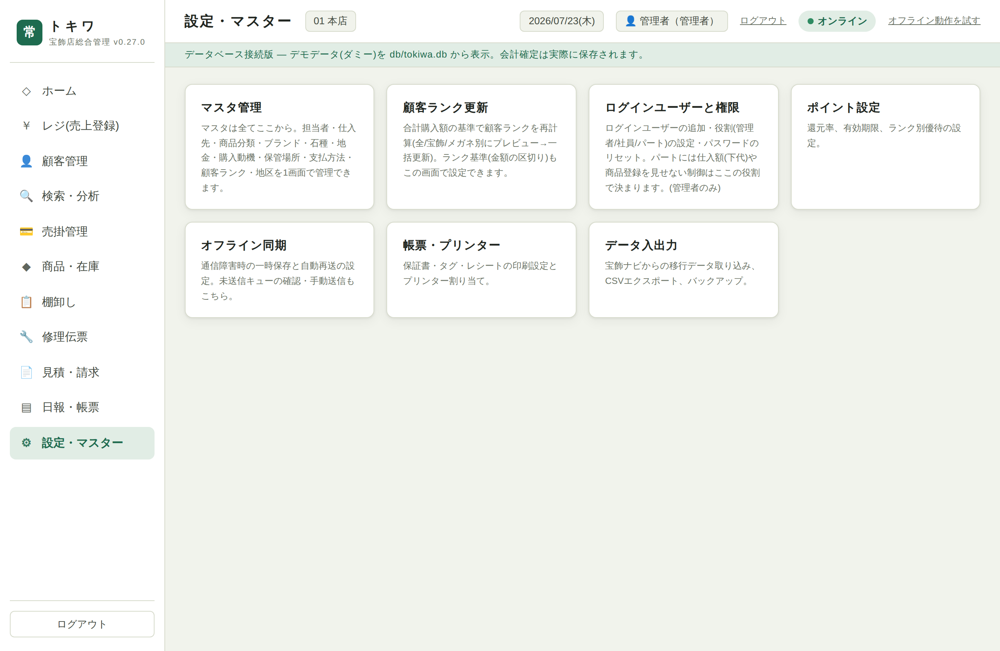

トキワは、宝飾ナビに代わる店舗の販売・顧客・在庫の管理システムです。1台のPCで動かし、ブラウザで使います。
ユーザーごとにログインします。パスワードは本人が初回ログイン時に設定します(管理者がリセットすると、次回ログインで再設定)。
お客様を選び、明細を作り、支払を確定する画面です。

| ボタン | 使う場面 |
|---|---|
| ＋商品番号で追加(在庫品) | 在庫の商品を番号で追加。スキャナまたは手入力。 |
| ＋番号なしで追加 | 電池交換・レンズ・各種修理など、在庫品でないものを品名・金額で追加。 |
| ＋受託品(催事) | メーカーの受託品をその場で追加(→ 12章)。 |
| 💴 レジ入出金 | 代引手数料・収入印紙・両替・経費など、買い物と無関係な現金の出入り。 |
各明細の買上金額は書き換え可能です。値引きはここで金額を下げて表現します。定価との差から割引率が表示されます。

顧客名・カナ・電話番号・担当者(番号でも可)・ランク・誕生月で絞り込めます。カナ検索は半角/全角・大小文字を自動でそろえて照合します。
| タブ | 内容 |
|---|---|
| 基本情報 | 住所・連絡先・担当・ランク・家族など。編集や家族の追加/修正/削除。 |
| 購入・アプローチ履歴 | 買上の履歴と、お声がけ(来店/DM/TEL/手紙)の記録。 |
| 入金管理 | そのお客様の売掛と入金の状況。 |
| ポイント | ポイントの残高・加算/使用の履歴。 |
| メガネ処方箋 | 度数などの処方箋情報。 |
「＋新規顧客」から登録。郵便番号→住所の呼び出しに対応。

| タブ | 内容 |
|---|---|
| 詳細検索 | 顧客の属性 × 買った商品 × 処方箋を掛け合わせ(AND)で絞り込む横断検索。「同じ商品を買った人」「特定条件の人」を抽出。 |
| 購入順位ランキング | 買上金額などの順位付け。 |
| メガネ処方箋検索 | 処方箋の条件で顧客を探す。 |

売掛(未回収残高)のあるお客様を、残高の多い順に一覧します。誰がいくら・件数・最古買上日・最終入金日が見えます。


状態(在庫/売上/受託/返品)・仕入先・ジャンル(宝石/メガネ/時計/その他)で絞り込み。商品を開くと詳細・写真が見られ、修正できます。
品名・分類・ブランド・地金・仕入先・仕入単価(下代)・上代・店舗などを入力します。宝石以外は宝飾専用の項目が隠れ、掛率・折数は自動計算です。商品写真もその場で撮る/選べます。

店頭・金庫の現物を1点ずつ「商品番号」で読み取り、在庫台帳と照合します。開始日時が記録されます。

宝飾ナビには無かった新機能。お預かりした修理品を管理します。「＋新規預かり」でお客様・品物・内容・見込みを登録し、写真を撮って添付できます。預かり伝票を印刷して手渡し、状態(進行中/引渡済み)で管理します。
品名・金額の明細を作り、見積書・請求書として出力します。在庫商品から明細に取り込むこともできます。

マスタ管理: 担当者・仕入先・商品分類・ブランド・石種・地金・購入動機・保管場所・支払方法・顧客ランク・地区を1画面で管理します。仕入先にはジャンル(宝石/メガネ/時計/その他)を設定でき、在庫一覧の絞り込みに使えます。
ログインユーザーと権限(管理者のみ): ユーザーの追加、役割(管理者/社員/パート)の設定、パスワードのリセット。
催事などで、メーカーの品(自店の在庫でない品)をその場でレジに通すための機能です。売上が先・納品書は後という流れに合わせています。
データはPC内のデータベース1ファイルにまとまっています。定期的にバックアップを取ってください(火災・故障・盗難に備え、店外にも複製が理想)。
python3 scripts/backup_db.py(タイムスタンプ付きで複製)
python3 scripts/clear_receivables.py … 売掛残高のみ消去(入金履歴は残す)。実行前に自動バックアップ。--with-history … 入金履歴も消す。 --yes … 確認省略。import_csv.py --no-receivables。db/tokiwa.db に戻します。このマニュアルは現時点の機能までを収録しています。機能追加に合わせて更新します。